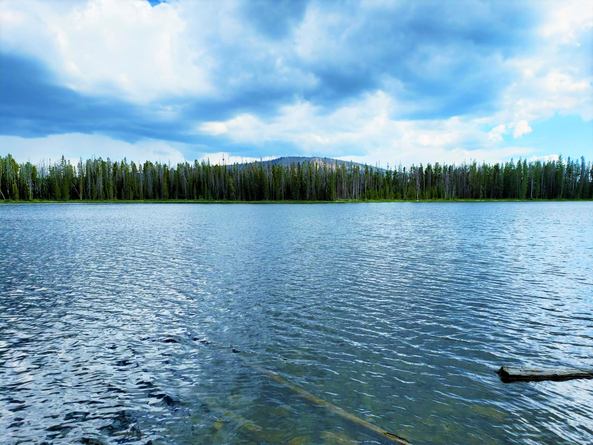
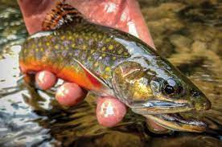
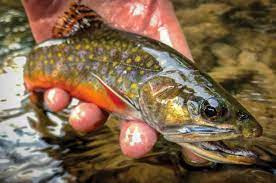

About
Background:
Alexander Lake is an aesthetic natural lake located in heavily timbered country
with very little open shoreline. It is 23 acres, 9,360 feet in elevation,
with 28 feet maximum depth. Several campsites are present along the northern
lake margin. The fishery is sustained by aerial stocking of brook trout.
Angling and Camping pressure is heavy. Will need a high clearence Awd/4wd vehicle.
Directions:
To access Alexander lake from Kamas Utah take Highway U-150
3 miles east to FR041 which is a left hand turn. Follow road Up the switchbacks
until you come to a fork in the road.Take the right fork and follow it until you
reach another fork and take a right. Any paths you take after that will take you
to different parts of the lake.
 
